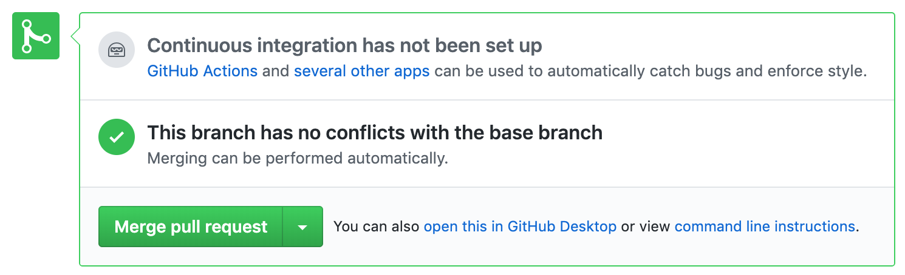
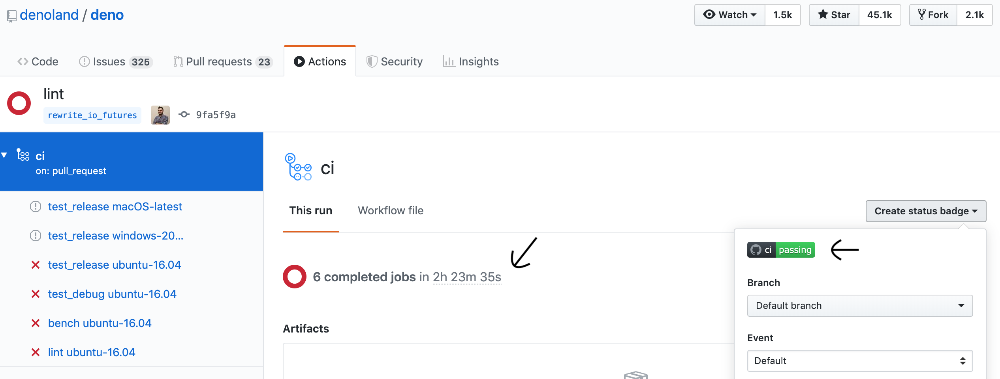
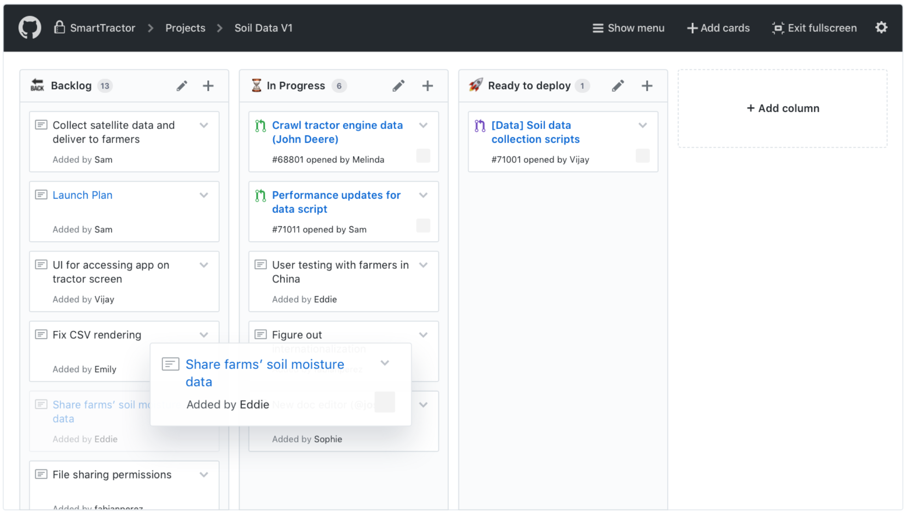
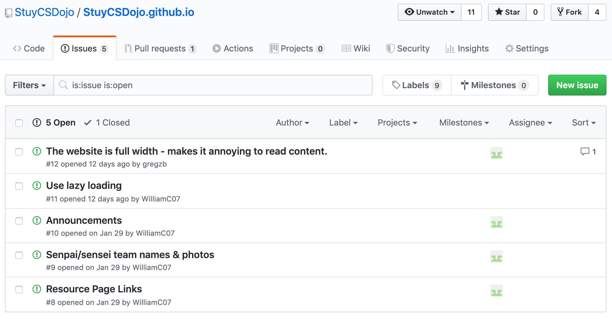
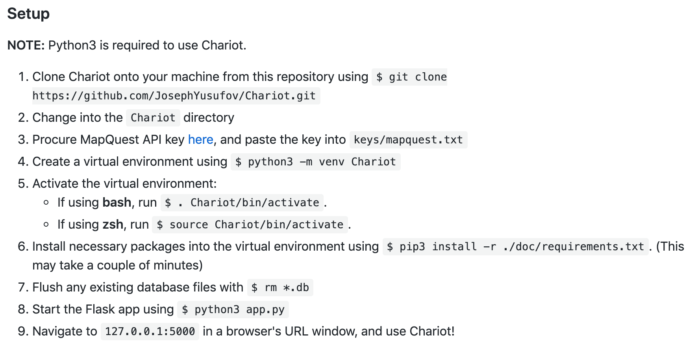

Continuous Integration
Eric Lam and William Cao
Team Eric Eats Cows
What is this?
Continuous Integration (CI) is a development practice where developers integrate code into a shared repository frequently, preferably several times a day. Each integration can then be verified by an automated build and automated tests.
Why?
- Instant Feedback
- Confidence in final product
- Communication
Keep your builds fast
- Commit multiple times a day
- Fast local tests and slow tests that run a server
Keep your builds fast
Github Actions
Everyone can see what's happening
Jira

Github Projects
Github Issues
Test in a Clone of the Production Environment
Instructions in README
A Docker container image is a lightweight, standalone, executable package of software that includes everything needed to run an application: code, runtime, system tools, system libraries and settings.
Make it easy to get the latest deliverables

Make it easy to get the latest deliverables

Continuous Deployment
- Automatically update production code
- Docker